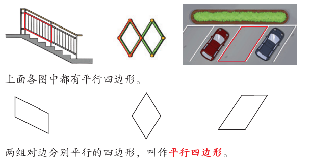
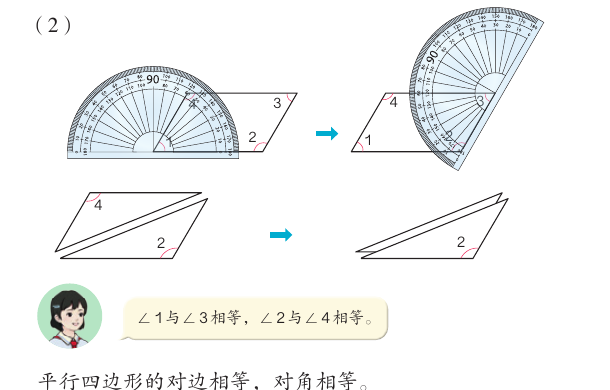
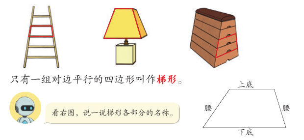
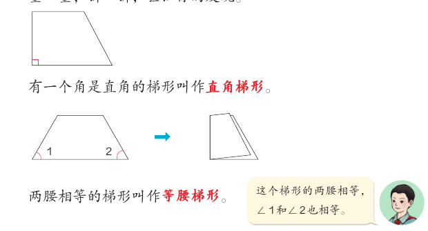
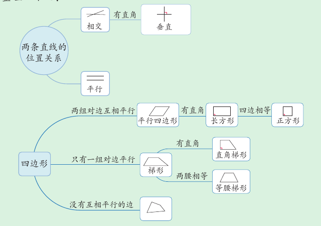
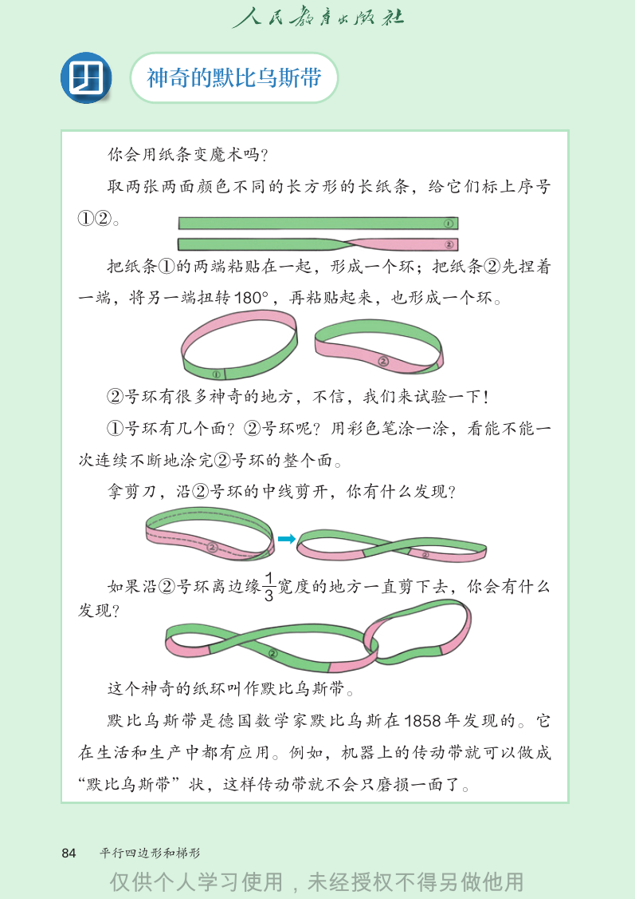

平行四边形和梯形
楼梯扶手、伸缩门、停车位里都有平行四边形；梯子、台灯罩、跳箱里藏着梯形。这一课，我们用上一课学的“平行”，给四边形分分类。
学完本课，你能够：
01平行四边形
先说结论：两组对边分别平行的四边形，叫作平行四边形。

两组对边分别平行的四边形，叫作平行四边形。教材第 78 页
“对边”是四边形里不相邻的两条边。四边形有两组对边。两组都平行，才是平行四边形。
02平行四边形的边和角
先说结论：平行四边形的对边相等，对角相等。
教材第 78 页用圆规比边：AB 与 CD 相等，AD 与 BC 相等。第 79 页用量角器量角，再把平行四边形沿对角线剪开、叠一叠。结果是：∠1 与 ∠3 相等，∠2 与 ∠4 相等。

顶点只能停在点子上。1 格看作 1 cm。边长保留一位小数，角的度数取整数；“是否平行、是否直角、是否相等”按精确计算判断。
03梯形
先说结论：只有一组对边平行的四边形叫作梯形。

只有一组对边平行的四边形叫作梯形。教材第 80 页
梯形里平行的一组对边。教材的图里，上面的叫上底，下面的叫下底。
梯形里另外两条边叫腰。
04直角梯形和等腰梯形
先说结论：梯形里有两种特别的：有一个角是直角的，叫直角梯形；两腰相等的，叫等腰梯形。
教材第 80 页让你观察三个梯形。一个同学观察角，一个同学观察边。再量一量，折一折，验证你的发现。

有一个角是直角的梯形叫作直角梯形。教材第 80 页
两腰相等的梯形叫作等腰梯形。教材第 80 页
教材里的同学还发现：这个梯形的两腰相等，∠1 和 ∠2 也相等。回到四边形识别器，点“等腰梯形”，看看下底的两个角的度数。
05四边形之间的关系
先说结论：按对边平行的情况，四边形可以分成三类。两组对边互相平行的是平行四边形；只有一组对边平行的是梯形；还有没有互相平行的边的四边形。
教材第 81 页例 8 问：下面的图形有哪些共同的特点？又有哪些不同之处？一个同学说，这些图形都是四边形，都有四条边、四个角。另一个同学说，梯形只有一组对边互相平行，平行四边形有两组。

结构图依据教材第 85 页重画。
06拼一拼：两个梯形
先说结论：两个完全相同的梯形能拼成一个平行四边形。能不能拼成长方形，要看是什么梯形、怎样拼。
教材第 87 页练习十七第 6 题有两句话要你判断。“两个完全相同的梯形一定能拼成一个平行四边形。”“两个完全相同的梯形一定能拼成一个长方形。”用下面的演示试一试，再自己下结论。
演示只试“转半圈、沿一条腰贴合”这种拼法。图形是否平行、是否有直角，由程序精确判断。
07神奇的默比乌斯带
先说结论：把长纸条的一端扭转 180° 再粘起来，得到的纸环只有一个面。它叫作默比乌斯带。

- 取两张两面颜色不同的长方形长纸条，标上序号 ①②。
- 把纸条①的两端粘贴在一起，形成一个环。
- 捏着纸条②的一端，把另一端扭转 180°，再粘贴起来，也形成一个环。
- 用彩色笔涂一涂：看能不能一次连续不断地涂完②号环的整个面。
- 拿剪刀，沿②号环的中线剪开，看看你有什么发现。
- 再沿②号环离边缘 1/3 宽度的地方一直剪下去，又有什么发现？
默比乌斯带是德国数学家默比乌斯在 1858 年发现的。它在生活和生产中都有应用。例如，机器上的传动带可以做成默比乌斯带的形状，这样传动带就不会只磨损一面了。
08自测与速记
速记表
| 图形 | 条件 |
|---|---|
| 平行四边形 | 两组对边分别平行；对边相等，对角相等 |
| 长方形 | 平行四边形 + 有直角 |
| 正方形 | 长方形 + 四边相等 |
| 梯形 | 只有一组对边平行；平行的是上底、下底，另两条边是腰 |
| 直角梯形 | 梯形 + 有一个角是直角 |
| 等腰梯形 | 梯形 + 两腰相等 |
| 默比乌斯带 | 纸条一端扭转 180° 再粘起来；1858 年由默比乌斯发现 |
相关课程
教材：人教版《数学》四年级上册（2022 课标修订版）第五单元“平行四边形和梯形”第 78–87 页。标为“补充”的内容和模拟演示是课程作者的解释，不是教材原文。